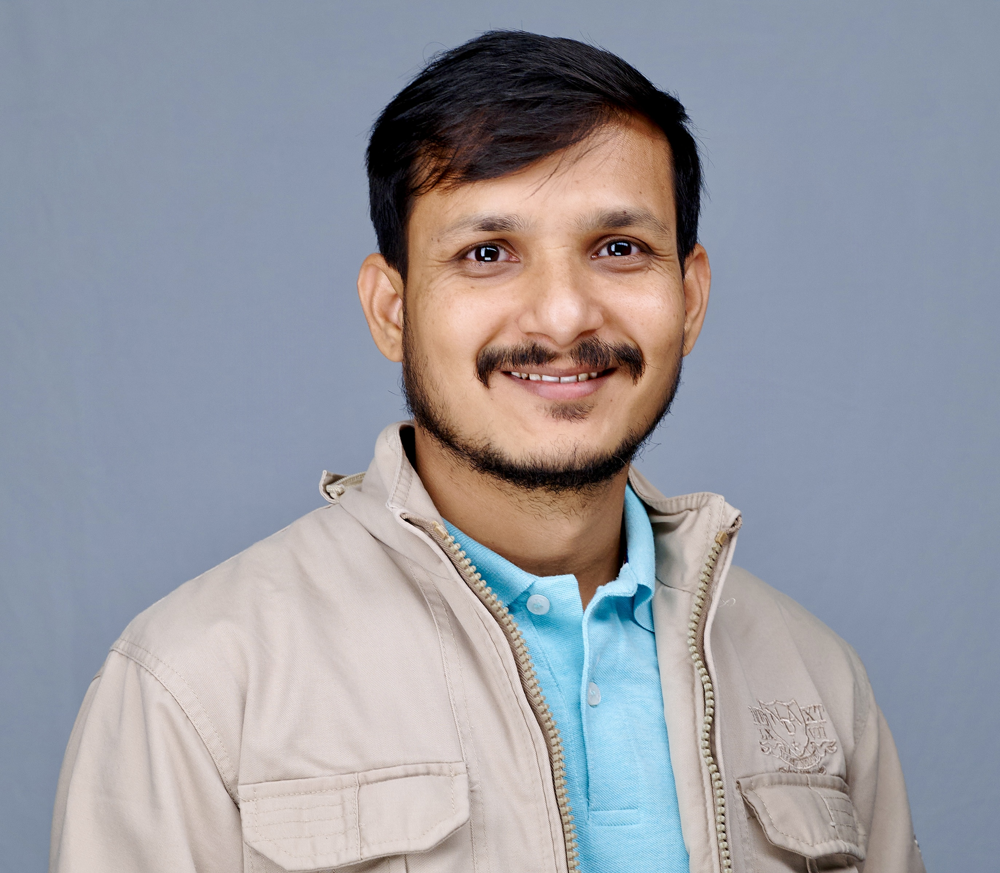
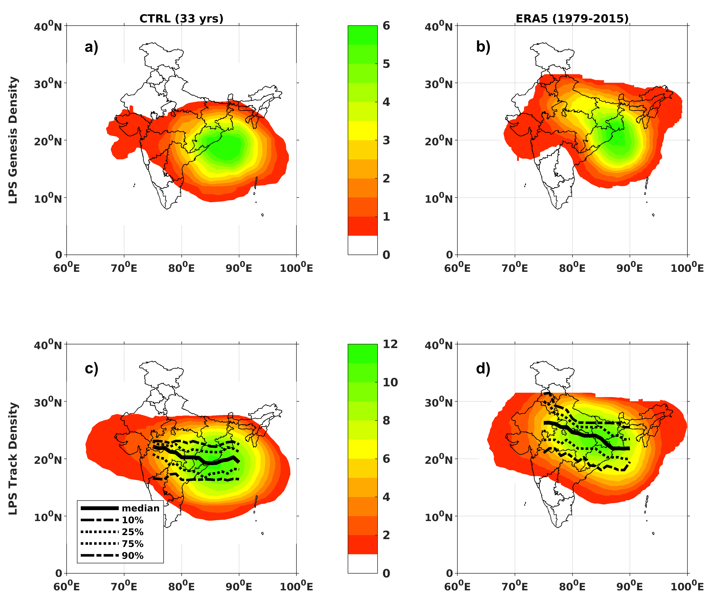

Mahendra Singh
Indian Institute of Science (IISc), Bangalore
I study how Indian Summer Monsoon low-pressure systems are simulated in climate models and how they respond to climate change and stratospheric aerosol geoengineering (SAG).

I am a fifth-year PhD research scholar at the Centre for Atmospheric and Oceanic Sciences (CAOS), Indian Institute of Science (IISc), Bangalore.
My research focuses on Indian Summer Monsoon Low-Pressure Systems (LPS): their climatology, model biases, and how they respond to stratospheric aerosol geoengineering. I use the CESM2.1.3 fully coupled Earth system model alongside ERA5 reanalysis to investigate monsoon dynamics and regional climate risks over South Asia.
Response of Monsoon Low-Pressure Systems to UNIFORM Stratospheric Aerosol Geoengineering (SAG)

This work investigates how Low-Pressure Systems (LPS) during the Indian Summer Monsoon respond under the UNIFORM geoengineering experiment, in which stratospheric sulfate aerosols are uniformly prescribed to counteract warming from doubled atmospheric CO₂, using the fully coupled CESM2.1.3 climate model. By comparing UNIFORM, doubled CO₂, and control simulations, I analyse changes in the frequency, intensity, tracks, duration, and rainfall contribution of monsoon LPS. Results show that although aerosol intervention substantially offsets large-scale warming, it also modifies land–sea thermal contrast, atmospheric circulation, and moisture transport, which are key drivers of LPS formation. Geoengineering impacts therefore extend beyond global temperature recovery and can significantly influence regional rainfall and climate risks over South Asia.
Accounting for the Bias in the Median Track of Indian Summer Monsoon Low-Pressure Systems in an Earth System Model

Indian Summer Monsoon LPS are among the most important rain-bearing weather systems over the subcontinent, contributing a major share of seasonal rainfall over central, eastern, and northern India. Using CESM2.1.3 and ERA5 reanalysis, this study shows that the model produces a systematic southward shift in LPS genesis and tracks, linked to a southward-displaced monsoon low-level jet and stronger dry-air intrusion from West Asia and the Arabian region. These circulation errors suppress LPS development into northern India, causing reduced rainfall over the monsoon core zone and excessive rainfall farther south. Similar biases are found across CMIP models, indicating a long-standing challenge in monsoon simulation that must be addressed for better seasonal forecasts and future climate projections.
-
Journal article
An Investigation of the Characteristics of Indian Summer Monsoon Low-Pressure Systems Under Stratospheric Aerosol Geoengineering
Earth's Future, 2026 · doi:10.1029/2026EF009141
-
Journal article
Accounting for the bias in the median track of Indian Summer monsoon low-pressure systems in an Earth system model
Journal of Climate, 2026 · doi:10.1175/JCLI-D-25-0510.1
-
Conference abstract (poster)
Response of the Characteristics of Monsoon Low-Pressure Systems to Stratospheric Aerosol Geoengineering during the Indian Summer Monsoon Season
106th AMS Annual Meeting, American Meteorological Society, 2026
-
Conference abstract (poster)
Biases in model simulations of Indian Summer monsoon low-pressure systems
EGU General Assembly Conference Abstracts, Vienna, Austria, 2025
-
Prime Minister's Research Fellowship (PMRF)August 2022 – Present · Special research fellowship for doctoral students at institutes of national importance, Government of India
-
Grantham FellowshipJanuary 2022 – December 2022 · Awarded for Academic Excellence
-
CSIR National Eligibility Test, Junior Research Fellow (NET-JRF), 2017Physics · Conducted by the Council of Scientific and Industrial Research (CSIR)
-
Graduate Aptitude Test in Engineering (GATE), 2019Physics · AIR-142 · Conducted by IIT Madras
-
INSPIRE ScholarshipDepartment of Science and Technology (DST), Govt. of India · Awarded for being in the top 1% meritorious students in Class 12
-
Oct 2026
Paper published in Earth's Future: An Investigation of the Characteristics of Indian Summer Monsoon Low-Pressure Systems Under Stratospheric Aerosol Geoengineering.
-
Mar 2026
Paper published in Journal of Climate: Accounting for the bias in the median track of Indian Summer monsoon low-pressure systems in an Earth system model.
-
Jan 2026
Presented a poster at the 106th AMS Annual Meeting, Houston TX, USA, on the response of monsoon LPS to stratospheric aerosol geoengineering.
-
Apr 2025
Presented a poster at the EGU General Assembly 2025, Vienna, Austria, on biases in model simulations of Indian Summer Monsoon low-pressure systems.
-
2024
IISc News: IISc research helps to set the aerosol planetary boundary.
Open to research discussions, collaborations, and academic conversations.